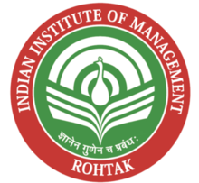

NARAYAN MISHRA 
IPM | 2021-24
ACADEMIC QUALIFICATIONS
Year Qualification Institute %/CGPA
2021-24 IPM-BBA Indian Institute of Management Rohtak 7.93 CGPA
2020-21 Class XII (CBSE) Police Modern School, Bareilly 98.00 %
2020-21 Class X (CBSE) Police Modern School, Bareilly 97.50 %
INTERNSHIPS
Umeed - A Drop of Hope Social Work Intern Jun 22- Aug 22
- Engaged in a PAN India internship with a focus on social work, successful marketing, fundraising, and human resources
- Spearheaded impactful initiatives including plantation drives and government scheme awareness in nearby villages
- Explored ground-level challenges faced by NGOs, SHGs and Old age homes while visiting and preparing a comprehensive
report
GirlUp Shine Social Media Marketing & IT/Design Intern Mar 22- Jun 22
- Implemented successful marketing strategies through compelling awareness campaigns on multiple social media platforms
- Played an active role in the brainstorming sessions to develop social awareness about the prevalent social issues
- Utilized Canva to design impactful posters while contributing to decision-making, content creation, and social media
management
IFORTIS WORLDWIDE Marketing and Sales intern Mar 22- Apr 22
- Assisted in customer segmentation and contributed to sales optimization by effectively categorizing clients into
separate sales bands
- Proactively reached out to multiple potential leads in a 28-day period, showcasing strong sales acumen and communication skills
- Efficiently managed Excel and Google Sheets to track customer data and conversion rates, showcasing strong organizational skills
Road To IPM Graphic Designing and Marketing Intern Oct 21- Dec 21
- Developed 40+ engaging templates driving significant social media engagement for the startup's marketing efforts
- Actively participated in the founders' business development meetings, provided valuable input and shaped marketing
strategies
- • Developed engaging educational posters for the startup's social media handles, resulting in a significant increase in online visibility
ACADEMIC PROJECT
Indian Institute of Managament Rohtak
“100 lakh Crore Rupees investment under PM Gati Shakti - National Master Plan for Multi-modal Connectivity scheme and its
contribution in improving Indian logistics and business competitiveness.”
- Researched the PM Gati Shakti Scheme to understand its impact on the Indian Logistics
- Analyzed construction company data to understand logistical inefficiencies in India 2023
- Researched how business competitiveness can be improved with reduced logistics cost
POSITIONS OF RESPONSIBILITY
Senior Member of The Social Welfare Club of IPM- Utthaan
- Managing term-wise budgetary requirements as the current Treasurer of the club
- Playing a key role in inter-club discussions and liaising with the administration
2023
- Heading and Structuring the Environment and Sustainability Society of the club
Junior Member of The Social Welfare Club of IPM- Utthaan
- Successfully organized 6 flagship events of the club while ensuring student engagement
- Handled Public Relations and graphic designing to enhance the club's visibility 2022-23
- Actively contributed to the club's mission by supporting community outreach programs
ACHIEVEMENTS & EXTRA-CURRICULARS
Achievements
High academic achiever with 98% in 12th standard 2021
High academic achiever with 97.50% in 10th standard 2019
• Achieved (100 out of 100) marks in the Foundation of IT subject in the 10th standard 2019
Competitions
(8th out of 464 teams) National finalist in The Public Policy Quiz by MDI Gurgaon 2022
Certifications
Accounting fundamentals from Corporate Finance Institute (CFI)
2022
Google Analytics for Beginners by Google 2022
Others
Vice-Captain of the Shivaji House at school and led it in multiple inter-house events 2019-20
Inter-School Judo Bronze medalist
2018
National Science Olympiad silver medalist 2017
Program Manager & Representative, Baal Van Karyakram organized by UP government 2016
My Hobbies
My PDF CV